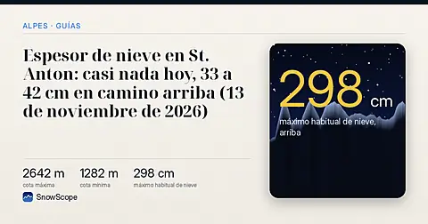
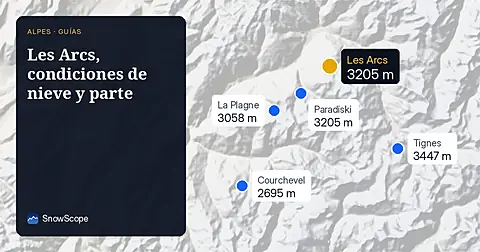
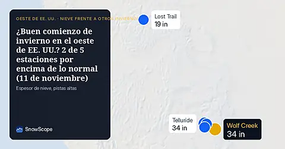
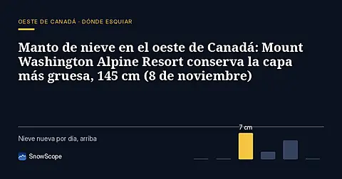

Partes de nieve · Espesor de nieve
Partes de nieve diarios para esquiadores: dónde está la nieve, qué llega y dónde esquiar, a partir del mapa de nieve de SnowScope y de las estaciones de medida. Cada cifra sale de los datos del día.


¿Se llena la reserva de nieve como de costumbre? Comparamos la nieve de hoy en 5 estaciones en el oeste de Canadá con la misma fecha de cada uno de …

Espesor de nieve en St. Anton am Arlberg el 13 de noviembre de 2026: cerca de 1 cm en la cima (2642 m), 5 cm a media montaña, nada en el pueblo. Esta semana 42 cm en la cima y 33 cm a media montaña, lluvia por debajo de unos 1480 m. Cuánta nieve necesitan las pendientes fuertes.

Las estaciones de esquí del Atlas no guardan nieve en sus pistas hoy. La nieve solo se almacena en las cumbres más altas: unos 40 km² de suelo, hasta …

Estado de la nieve en Tignes el 13 de noviembre de 2026: 42 cm en la cima (3447 m), 12 cm a 2503 m, valle sin nieve a 1559 m y 99 cm previstos en la cima en siete días, con lluvia por debajo de unos 1700 m. La comparación con 46 inviernos pasados.

El parte de nieve de Les Arcs: 34 cm en la cima (3205 m), 2 cm a media montaña, base sin nieve, y hasta 69 cm de nieve nueva previstos en la cima en los próximos siete días. Lo que Les Arcs suele tener en noviembre y diciembre.

Sin nieve aún en Oukaïmeden el 12 de noviembre. Las cimas del Atlas están desnudas; la temporada de invierno alcanza típicamente su pico en marzo con 58 cm en la cima.

El 11 de noviembre los Pirineos apenas tenían nieve: Estació d'esquí de Port-Ainé tiene 0 cm frente a 6 cm del año pasado. La temporada va con semanas de retraso.

¿Es un buen comienzo de invierno en el oeste de EE. UU.? 5 estaciones en el oeste de EE. UU., 46 inviernos pasados, una fecha: así queda hoy. …

Whistler Blackcomb recibió 75 cm de nieve nueva en la cima en una semana y después una tormenta templada con 124 mm de agua. Una guía sencilla sobre base, nieve nueva, lluvia y costra.

Un plan barato de 3 días en el lago de Como en diciembre con precios reales 2026-27: trenes, barcos, funicular y esquí en Piani di Bobbio o Madesimo, lo que ahorras frente a Cortina y la probabilidad de nieve en Navidad.

La nieve de hoy en Livigno, lo que dice la previsión estacional europea para diciembre y por qué en Navidad la altitud gana a un mes templado.

La nieve de hoy en Cortina, la previsión estacional europea para diciembre y nuestras probabilidades de una Navidad blanca en el este de los Dolomitas.

Pronóstico de Dolomitas para diciembre de 2026: más cálido por 1,7 °C, ligeramente más húmedo, 30 cm de nieve a fin de año, Navidad blanca a media montaña. Datos del 10 de noviembre.

Cuánta agua podría guardar la nieve del Atlas en febrero de 2027: la previsión estacional europea es unos 3 °C más cálida y más húmeda al oeste y al sur, así que las probabilidades de nieve siguen bajas en las cuencas de Marruecos.

Pronóstico de enero de 2027 para el Atlas de Marruecos: se esperan 69 millones de m³ de agua de nieve, muy por debajo de los habituales 206. Datos del 10 de noviembre de 2026.

Bou Iblane sigue desnuda en diciembre. Pronóstico estacional: 2,3 °C más cálido de lo habitual, solo se esperan 22 cm de nieve nueva, 0 cm en el suelo el 31 de diciembre. Datos: 10 de noviembre de 2026.

Perspectiva estacional para las Rocosas: diciembre más cálido, nieve cerca de lo normal, pero el norte tiende a ser más escaso mientras Colorado y Utah siguen sin decidirse. Datos del 10 de noviembre de 2026.

Diciembre en los Alpes del Sur será más cálido y húmedo de lo habitual, pero la profundidad de nieve a fin de año debería mantenerse cerca de lo normal. Análisis de SnowScope del 11 de noviembre de 2026.

Oukaimeden se enfrenta a un diciembre cálido con 13 cm previstos el 31 de diciembre, muy por debajo de los 26 cm habituales. Datos del 10 de noviembre de 2026.

Chamonix comienza diciembre con 27 cm en la cima pero nieve fina más abajo. El calor y la humedad se enfrentan; espera nieve de diciembre casi normal. Datos del 10 de noviembre de 2026.


Si buscas la mayor cantidad de nieve en el oeste de Canadá hoy, mira Mount Washington Alpine Resort (Canadá): unos 145 cm arriba. Después vienen …
Sin nieve en la media estación de Baqueira-Beret el 8 de noviembre de 2026. Típico para la fecha: en 46 inviernos anteriores la media fue de solo 1 cm aquí. Lluvia en camino; la nieve se queda en cotas altas.